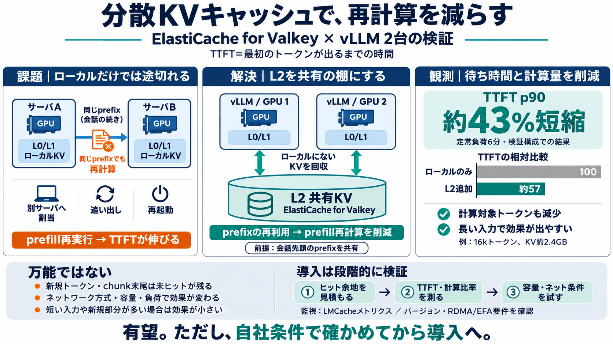

Announcing distributed KV caching for self-hosted LLMs with Amazon ElastiCache | The AWS News Feed
- Distributed KV caching adds a shared L2 cache tier for GPU fleets to store key-value state computed during prefill pha…

- Distributed KV caching adds a shared L2 cache tier for GPU fleets to store key-value state computed during prefill pha…
Distributed KV caching runs on cache.i8ge.48xlarge nodes in the same Availability Zone as the GPU fleet and connects to …
a risk. If a node fails or a failover happens or maintenance kicks in you can lose data. So traditional in-memory caches…
View a markdown version of this page # Metrics for Valkey and Redis OSS The `AWS/ElastiCache` namespace includes the f…
Together, Pliops and the vLLM Production Stack are delivering unparalleled performance and efficiency for LLM inference.…